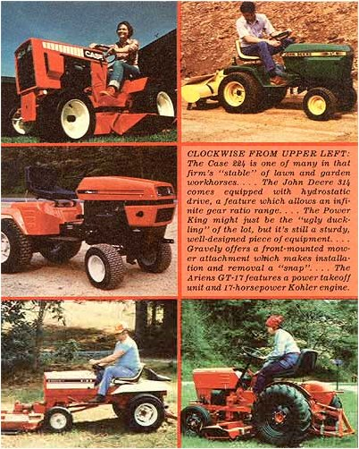
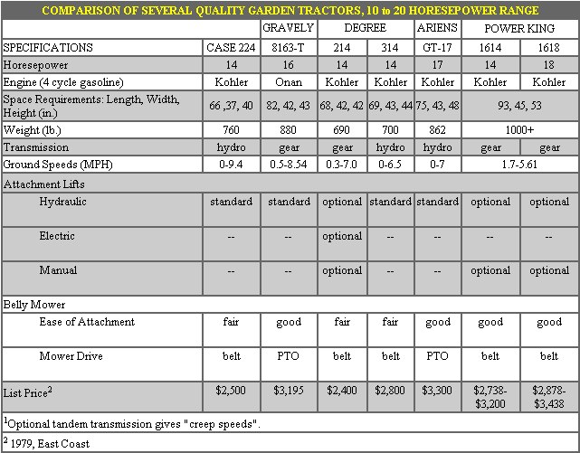

Will Rowan offers some solid tips to help you buy "right" the first time.
It's a fact: Home gardening is becoming more and more popular with each new year. As a result of this backyard growing boom, retail sales of lawn and garden products have-in the United States-increased from $2 billion in 1972 to a projected $14 billion It's a fact: Home gardening is becoming more and more popular with each new year. As a result of this backyard growing boom, retail sales of lawn and garden products have-in the United States-increased from $2 billion in 1972 to a projected $14 billion in 1979! And while buyers are inundating garden centers with new business, the equipment dealers are swamping their customers with an unbelievable variety of machinery and tools with which to ease their plowing/tilling/mowing chores.
This spring, for example, there were no fewer than 115 different sizes and shapes of new, gasoline-powered, 10- to 20-horsepower garden tractors lining showroom floors across the country . . . with prices ranging from $1,850 (for some of the lesser-known brands) to almost $4,000 (for the most fully equipped, "flashy" models).
Of course, because of the wide variety of machines on the market, there is some question as to what the term "garden tractor" actually means. But, according to the Outdoor Power Equipment Institute (which is responsible for sorting out the various categories of lawn and garden machinery), a garden tractor is properly defined as a "self-propelled riding vehicle-designed for general purpose lawn and garden work-which must have all attachments removable . . . and be capable of pulling a plow."
Market analysts in the outdoor power equipment industry aren't exactly sure what's behind the phenomenal growth of their field, but there are a lot of theories making the rounds. It's finally being recognized, for instance, that one-family dwellings are on the increase again, and that the "back to the suburbs, back to the country" movement is growing stronger every year.
In addition, the rapid and well-advertised inflation in real estate values has turned many homeowners into meticulous caretakers . . . who are willing to spend more on the upkeep of their lawns and gardens.
A recent Department of Agriculture survey also came up with an interesting fact: There are about 6,000,000 acres under cultivation in home gardens today . . . almost the same as the total commercial acreage planted in fruits and vegetables! And the survey emphasized another point that most of MOTHER's readers already know: In 1977-for the first time-the gardeners surveyed by the USDA began to talk about the superior quality of chemical-free fruits and vegetables raised at home. Perhaps the cost of tools for home food production-one of which would be a high-priced garden tractor and its implements-is becoming less of a deterrent in a nation that's very rapidly adjusting to a new level of health and nutrition awareness.
Everyone likes to make the best possible buy on a costly item such as a garden tractor . . . this is one place in the homestead budget where you can't afford to make a mistake. In earlier years (when prices weren't so astronomical) such a gardening "luxury" could, perhaps, have been treated more lightly. But homegrowin' convenience is extremely expensive today, and anyone who hopes to choose the right machine on his or her first try should be ready to give the matter a little careful thought.
Consequently, I decided to try to sort out the variables in the field by [1] taking a look at some of the features of these modern machines, [2] talking to dealers, and [3] speaking to both the satisfied and dissatisfied customers who had actually put the machines to work on their home vegetable plots.
As a result of this investigation, I've identified five cardinal guidelines for the buyer to consider before making his or her "big purchase".
[1] Is the machine big enough? The most frequent warning I heard from garden tractor owners was, "Don't buy a machine that's too small." Ten horsepower may sound like a lot of push compared to what Grandpa's of Dobbin could put out, but tractors and critters use their strength in different ways. Your grandfather's mare delivered one horsepower . . . but she worked with every bit of it. A 10-horsepower engine-on the other hand-may deliver only 7 "horses" to the wheels . . . while 2-1/2 of those "ponies" do no more than move the weight of the machine itself, and one or both drive tires may start to slip before the remaining power can be transmitted to a plow.
This example may be a bit extreme, but the little machines are notorious for poor traction. Wheel weights and tire chains will be of some help if you don't mind the nuisance of putting them on and taking them off . . . but-if you plan to do plenty of gardening-there's no substitute for extra power coupled with extra chassis weight. Serious backyard growers should buy a machine in the 14- to 20 HP class.
Also, be certain to study the selection of speeds offered-especially on the gearand belt-driven models-because earthcontacting tools need time to "do their thing". Garden work will demand speeds down around 0.5 or 1.0 miles per hour, and machines with minimum speeds of 2-3 MPH are only suitable for lawn work . . . not for plowing or rototilling.
[2] Can you change the tractor's attachments quickly and easily? The second most common complaint that I encountered had to do with the difficulties of putting on attachments for use or removing them for storage.
The three-point hitch on a typical farm tractor makes it possible to switch implements in very short order . . . usually about two minutes to attach a plow or disc harrow, and five to ten minutes to hook up a rotovator or mower.
Can your chosen garden tractor match those figures? To find out, look at each linkage point for the belly mower and imagine yourself connecting every bolt, spring clip, pin, and pulley belt. Also, take into consideration that you'll be adjusting the tension on each belt once the mower is in place beneath the machine. Is there clearance for your hands to reach the points of adjustment? Finally, ask yourself if-once you're away from the smooth tile of the showroom floor-you'll be able to see what you're doing under the vehicle without lying on your back in the wet grass.
In my opinion, the designers of compact tractors have almost uniformly failed to give sufficient thought to the matter of attaching and removing implements, and-unfortunately-only a few manufacturers show any common sense in this area at all. The J.I. Case Company uses a convenient hydraulic drive for many attachments . .. but, even so, the firm's belly mower cannot be installed without a fair bit of bother. Both Ariens and Gravely deserve gold stars . . . because both supply power to the belly mower through well-located power takeoffs (PTO's) rather than belts, and Gravely has an optional frontmount mower-with near bush-hog capability-which is a "breeze" to install.
My other "best of the group" choice is the Power King, made by the Engineering Products Company. This manufacturer provides a "no-foolin' " three-point hitch with real tractor capabilities. But, again, the King's belly mower is something of a "bear" to fasten and remove.
Nevertheless-although the Engineering Products Company vehicle may be the ugly duckling of the garden tractor family-its rugged styling and automotive-strength components have earned it a following of outspoken admirers.
The transition from spring to summer to fall may require as many as a dozen attachment changes. If these "swaps" can't be made with ease, you'll soon find yourself turning to hand work . . . just to avoid wrestling with ill-fitting and ill-conceived equipment.
[3] Belt, hydrostatic, or gear drive? My inquiries turned up a lot of different opinions on the question of which type of drive train is actually superior. Of the 115 models available in 1979, 66 are primarily gear-driven, 4 are belt-driven, and 45 feature hydrostatic (hydraulic or fluid) drive.
The industry trend seems to be toward the use of hydrostatic transmissions. Such systems offer two advantages: They give the operator an infinite range of travel speeds from zero to eight or nine miles per hour, and the hydraulic fluid provides some measure of protection to the engine should an implement strike something or create an overload. On the other hand, hydrostatic transmission usually adds to the cost of a vehicle. (Belt-driven models also give engine protection to some degree . . . since a belt can slip or stretch under severe strain.)
Gear-driven units have distinct advantages, too. A properly engineered gear train transmits the engine power with great efficiency . . . greater than either the belt or hydrostatic forms of drive. And if used properly and serviced conscientiously, a gear train-operating at the modest speeds of the garden tractor-can last for a rewarding length of time. (The better gear-driven models such as the tractors manufactured by Gravely-are also provided with slip clutches and shear pins to help protect against accidental damage. Look for such features if you decide to buy a gear-driven machine.)
[4] Is it rugged enough? Inspect the drag rods, linkages, and axles when considering any small tractor. Are the units built to stand the kind of pounding that dislodged stones and clods of broken earth can cause? Garden work strains a machine far more than does lawn care. Some machines have slim axles of 1/2 inch steel, which might last for no more than a year or two of plot preparation before wearing or bending.
Are there grease fittings for the bearings and other points of friction? Can you get at the engine for servicing? Are the wires accessible at the rear of the "control panel"? Ask yourself these-and as many other hard questions as you can possibly think of-before making your purchase.
[5] Can you store the tractors? Do you have sufficient space, out of the weather, to protect the tractor you choose to buy? Some garden machines are very difficult to start in cold weather, and a warm spot in the basement or garage can be a tremendous advantage for folks who'll want to use their tractors for winter snow removal. The wear and tear of nasty weather can really wreak havoc on an improperly housed machine, too. Good winter care will pay off handsomely when you come to trade-in time.
Many folks will, of course, consider a riding tractor to be an unnecessary luxury . . . especially as compared to a less-expensive walk-behind tiller. There are, however, a lot of people who-for reasons of health, strength, or lack of time really need a well-built lightweight yard machine . . . and perhaps wouldn't be able to do much gardening at all without a sit-down vehicle.
Should you find yourself in the latter group, a garden tractor could be a very rewarding purchase. If you give the choice a little extra thought before you make your purchase-and provide the vehicle with careful day-to-day maintenance afterward-you should be able to buy the right machine in the first place . . . and obtain a reasonable return on your investment over a period of five-or even as many as ten-busy and productive gardening years.
|
 |
 |
|